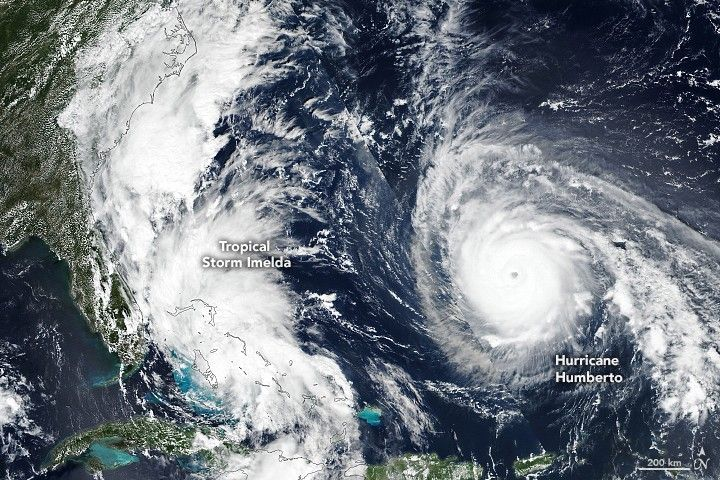

Imelda and Humberto Crowd the Atlantic
A pair of tropical cyclones, Imelda and Humberto, churned through the Atlantic Basin in late September 2025. Although both storms were forecast to remain over the ocean, they still brought heavy rain, gusty winds, and dangerous surf to the northern Caribbean, the Bahamas, Bermuda, and the U.S. East Coast.
Tropical Storm Imelda and Hurricane Humberto appear together in this image, acquired with the VIIRS (Visible Infrared Imaging Radiometer Suite) on the Suomi NPP satellite on September 28. That afternoon, Imelda was moving northward through the Bahamas with sustained winds of 40 miles (64 kilometers) per hour. Meanwhile, Humberto was roughly 700 miles (1,100 kilometers) east of the Bahamas, moving northwest with maximum sustained winds of 150 miles (240 kilometers) per hour, making it a Category 4 hurricane. The previous day, Humberto reached Category 5 strength, the second Atlantic hurricane to do so in 2025.
Imelda had already brought tropical storm conditions to portions of the central and northwestern Bahamas. Before being named, the system lashed Puerto Rico and eastern Cuba with heavy rainfall. In the coming days, Imelda could intensify further, causing flash and urban flooding along the coast of the Carolinas, according to the National Hurricane Center.
Although Humberto remained farther from land, its large size still affected coastlines. Dangerous surf conditions impacted beaches in the northern Caribbean, the Bahamas, and Bermuda, as well as much of the U.S. East Coast. Forecasters warned that the Mid-Atlantic and even some Northeast states could experience large swells and rip currents generated by the storm.
Conditions along the U.S. Atlantic Coast from Imelda may be less severe than initially expected. This is because Humberto, being relatively close, could influence Imelda’s track and draw it away from shore. This rare interaction between neighboring tropical cyclones is known as the Fujiwhara Effect. The storms’ potential tug-of-war presents forecasting challenges, but as of the morning of September 29, Imelda was projected to turn abruptly to the east-northeast. No Atlantic hurricanes had made landfall in 2025 up to that point.